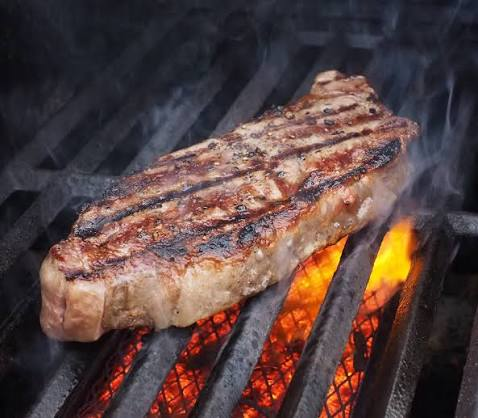

New York Strip Steak Recipe

What will you accomplish with this recipe?
A juicy New York Strip Steak pouring beef juice all over the plate, tender,
and ready to be devoured.
Ingredients
- New York Strip Steak
- Extra virgin olive oil
- Grass fed butter
- Garlic cloves
- Fresh rosemary
Steps
- Season the strip steak on both sides with sea salt and pepper.
Do not be afraid of salt or pepper when seasoning the Strip Steak; Make sure there is salt
all over every square centimeter of the meat. There is nothing worse than unseasoned food,
nothing, so season it well.
- Next, add the oil to a large frying pan or cast iron skillet over
high heat until it begins to smoke lightly.
- Place the steaks into the pan and immediately turn to medium-high
heat. Be sure not to crowd the pan to sear the steak, not steam it.
- Add garlic cloves, fresh thyme or rosemary, and unsalted butter
- Cook the steaks for 2 minutes before moving them around the pan to
ensure it becomes browned on every square millimeter of the steak.
- After 5-6 minutes of cooking, flip the steak over and repeat the
process.
- Remove the steak after 2-3 minutes of cooking on the other side and
set it on a cutting board or plate for 3-4 minutes to rest for a medium rare internal temperature.
Recipe credits to Chef Billy Parisi
Back to homepage